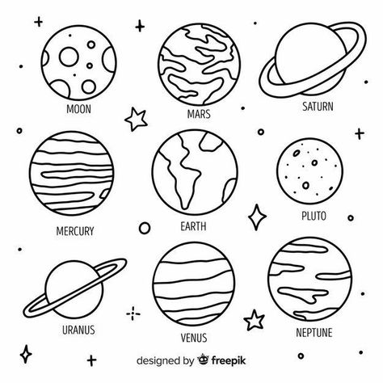

ფილმი მოგვითხრობს 17 წლის ქეითზე, რომელიც საშინელი დაავადების მატარებელია, იგი ბავშბობიდან მთელ დროს სახლში ატარებს, რადგან მისთვის მზის ერთი სხივიც კი შესაძლოა სასიკვდილო აღმოჩნდეს. მას ცხოვრება საჩუქარს უმზადებს, როდესაც ზაფხულში გაიცნობს ჩარლის და მათ შორის სასიყვარულო რომანი იწყება.
ელი არის სიმპათიური, მხიარული და კომუნიკაბელური გოგონა, რომელიც ადრიანად გაიფურჩქნა და არასოდეს უკოცნია ბიჭისთვის. მან გადაწყვიტა მონაწილეობა მიიღოს საგაზაფხულო დღესასწაულზე, რომელიც ტრადიციულად უმაღლეს სასწავლებელში ტარდება, სადაც ის ჩუქნის თავის პირველ კოცნას ნოე ფლინს...
არიანა გოდოის ამავე სახელწოდების რომანის ადაპტაცია, მოზარდი გოგონას რეკუელის შესახებ, რომელსაც დიდი ხანია მისი იდუმალი მეზობელი ბიჭი არესი სიგიჟემდე უყვარს. გოგონა ფარულად უთვალთვალებს მას, მაგრამ ისინი არასოდეს ლაპარაკობენ. ახალგაზრდა გმირს გადაწყვეტილი აქვს, რომ მას მისი შეყვარება აიძულოს. შედეგად, რეკუელი ვა-ბანკზე მიდის, თუმცა არესი, ის ტიპია, რომელსაც ასე ადვილად არ უყვარდება, ამიტომ მათ პოტენციურ ლტოლვას შეიძლება პატარა ბიძგი სჭირდება. ერთ დღეს ყველაფერი Wi-Fi-ის შეცვლილი პაროლით დაიწყება…ბნ
| row | name | age |
|---|---|---|
| 1 | ნინი | 11 |
| 2 | ლიკა | 35 |